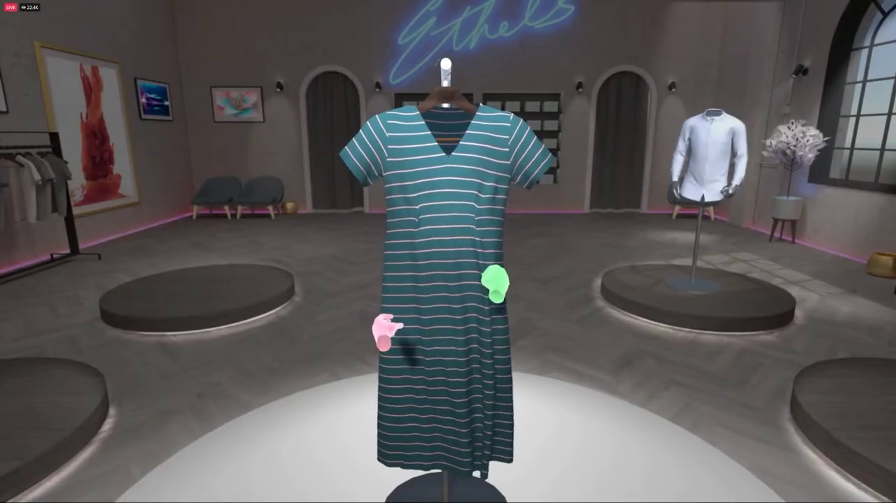
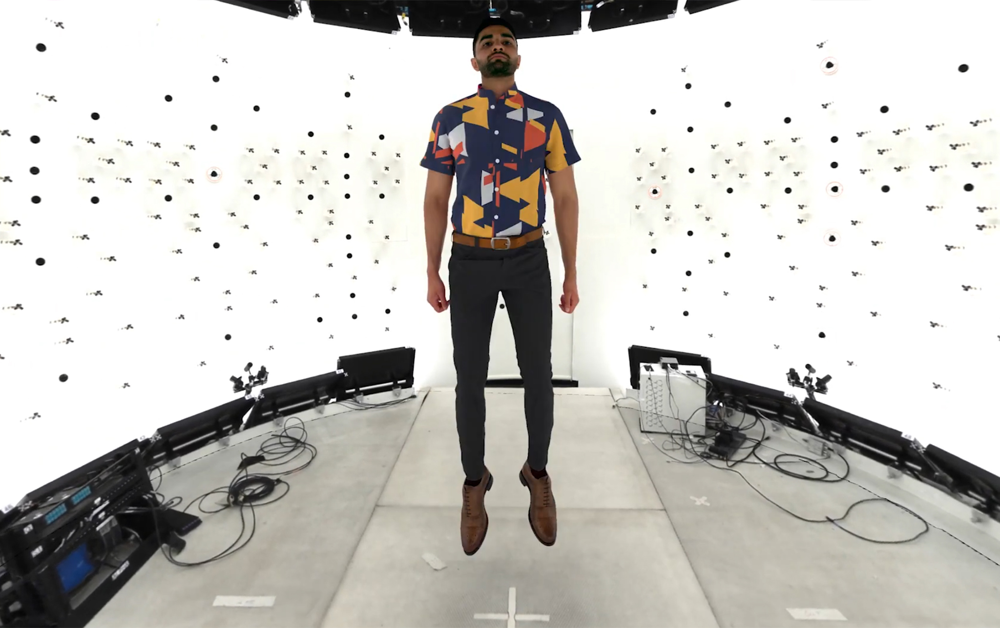
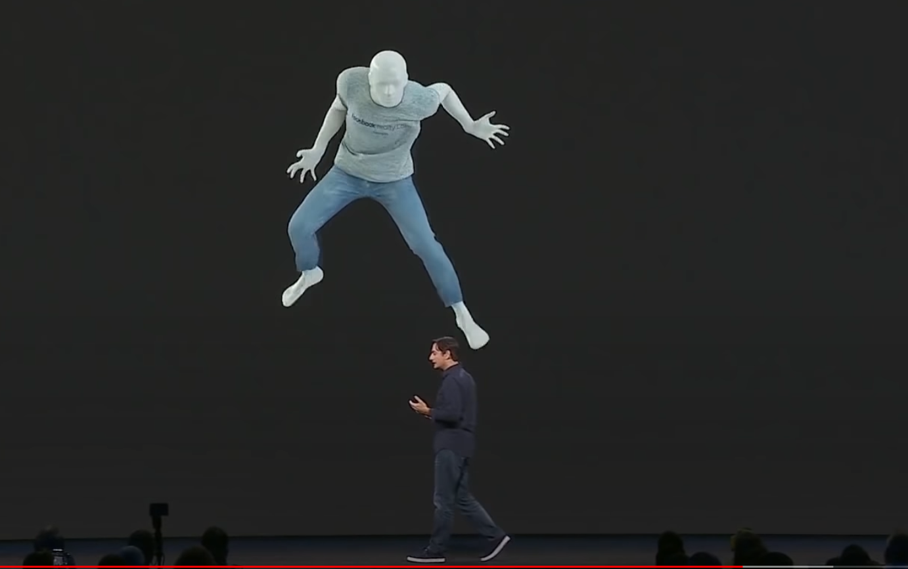
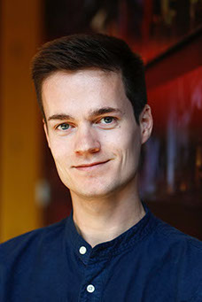
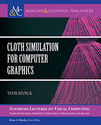
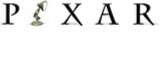

|  |  |  |
|  |
Tuur Stuyck Research Scientist - Meta Reality Labs Physics based animations, virtual clothing, digital humans and avatars, high performance graphics, machine learning tuur@fb.com Twitter LinkedIn |
I am a Research Scientist at Meta Reality Labs specializing in physics based animations. I served on the SIGGRAPH 2019 and 2020 Immersive Pavilion committee. I also served as a committee member for High Performance Graphics 2021. I am the author of the book Cloth Simulation for Computer Graphics I've been working with computer graphics for over 10 years, both from an artistic and from a technical point of view. I have made several computer animated short movies [link] and am now working in the exciting field of graphics research and how it relates to virtual humans, avatars and digital clothing. I have interned once at Adobe Research and twice at the Pixar Animation Studios research group. After my PhD I did a postdoc at Pixar. I obtained my PhD in computer science from KU Leuven University.
Publications
| Virtual Elastic Objects H. Chen E. Tretschk T. Stuyck P. Kadlecek L. Kavan E. Vouga C. Lassner IEEE Conference on Computer Vision and Pattern Recognition(CVPR) 2022 [paper] [Project page] |
| HVH: Learning a Hybrid Neural Volumetric Representation for Dynamic Hair Performance Capture Z. Wang G. Nam T. Stuyck S. Lombardi M. Zollhöfer J. Hodgins C. Lassner IEEE Conference on Computer Vision and Pattern Recognition(CVPR) 2022 [paper] [video] |
| Simulating garment with wrinkles based on physics based cloth simulator and machine learning model T. Stuyck T. Tung 2021 US Patent US10909744B1 |
| Cloth Simulation for Computer Graphics T. Stuyck 2018 Synthesis Lectures on Visual Computing: Computer Graphics, Animation, Computational Photography, and Imaging. Morgan & Claypool Publishers. |
| Natural Media Simulation and Art-Directable Simulations for Computer Animation T. Stuyck 2017 PhD Thesis. |
| Real-Time Oil Painting on Mobile Hardware T. Stuyck F. Da S. Hadap P. Dutre 2017 Computer Graphics Forum. |
| Sculpting Fluids: A New and Intuitive Approach to Art-Directable Fluids T. Stuyck P. Dutre 2016 Siggraph Poster and Research Competition Presentation Second place ACM SIGGRAPH Research Competition 2016 |
| Model Predictive Control for Art-Directable Fluids T. Stuyck P. Dutre 2016 Siggraph Poster |
| Digital Painting Classroom: Learning Oil Painting Using a Tablet T. Stuyck S. Hadap P. Dutre 2016 Siggraph Short Talk |
| HR-Kinect-High-Resolution Dynamic 3D Scanning for Facial Expression Analysis T. Stuyck D. Vandermeulen D. Smeets P Claes 2013 Master thesis |
Books
|  | Cloth Simulation For Computer Graphics Physics-based animation is commonplace in animated feature films and even special effects for live-action movies. Think about a recent movie and there will be some sort of special effects such as explosions or virtual worlds. Cloth simulation is no different and is ubiquitous because most virtual characters (hopefully!) wear some sort of clothing. The focus of this book is physics-based cloth simulation. We start by providing background information and discuss a range of applications. This book provides explanations of multiple cloth simulation techniques. More specifically, we start with the most simple explicitly integrated mass-spring model and gradually work our way up to more complex and commonly used implicitly integrated continuum techniques in state-of-the-art implementations. We give an intuitive explanation of the techniques and give additional information on how to efficiently implement them on a computer. Published by Morgan and Claypool Publishers: [link] Buy on Amazon: [link] Fxguide article:[link] |
Work History
| Meta Research Research Scientist Physics based animations for virtual humans and avatars 2019 F8 Talk [link] 2021 Oculus Connect [link] Jul 2018 - now |
| High Performance Graphics Comittee Member 2021 [link] |
| SIGGRAPH SIGGRAPH 2019, 2020 Virtual, Augmented, and Mixed Reality Committee Member |
|  | Pixar Animation Studios Postdoctoral Research Scientist Space-time Control for Cloth Simulation, 2017-2018 Research Intern (twice) Artistic Control of Cloth Simulations, Jun 2016 - Sep 2016 Space-Time Control for Cloth Simulations, Nov 2016 - Feb 2017 |
|
|
Adobe Research collaboration Continued collaboration working on research internship project, Aug 2014 - Jan 2016 Research Intern Realistic oil paint simulation on mobile hardware, May 2014 - Aug 2014 |
Education
| PhD Computer Science, KU Leuven Oct 2013 - Oct 2017 Natural Media Simulation and Art-Directable Simulations for Computer Graphics Master of science in ENGINEERING, KU Leuven Mathematical Engineering Sep 2011 - Jun 2013 Thesis: HR-Kinect - high-resolution dynamic 3D scanning for facial expression analysis Bachelor of science in ENGINEERING, KU Leuven Major: Computer Science | Minor: Electrical Engineering Sep 2008 - Jul 2011 |